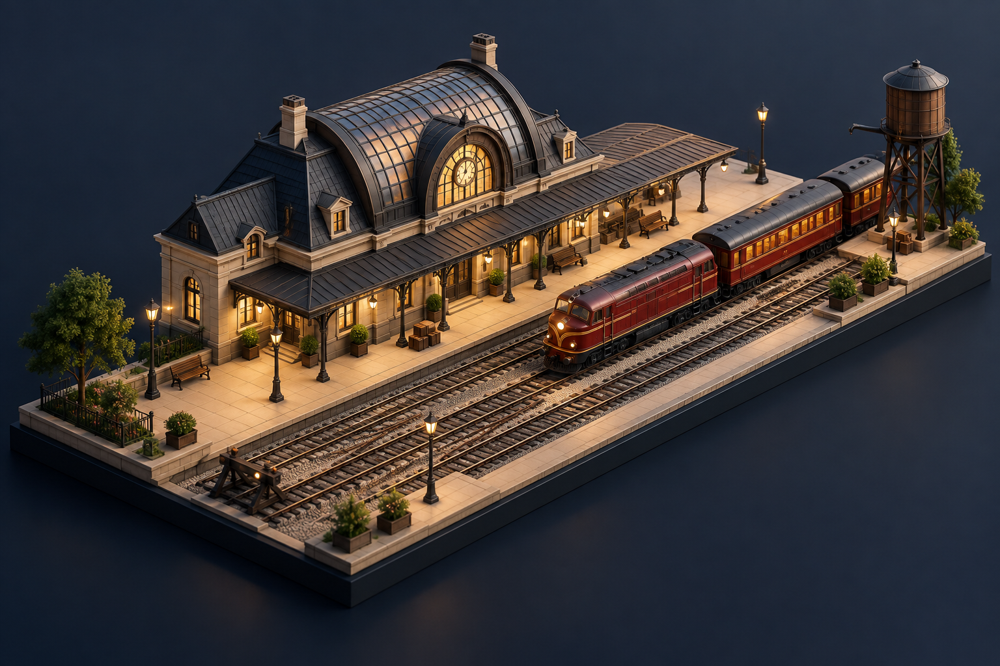
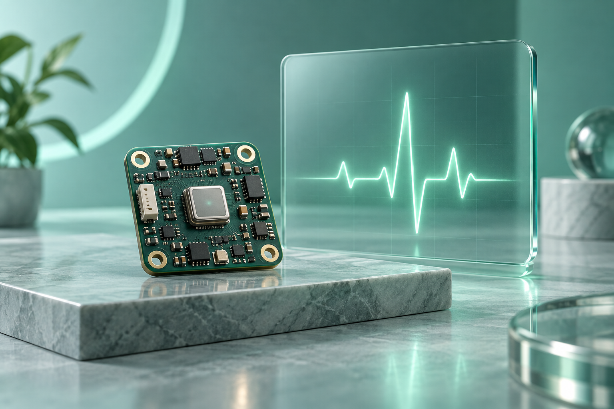
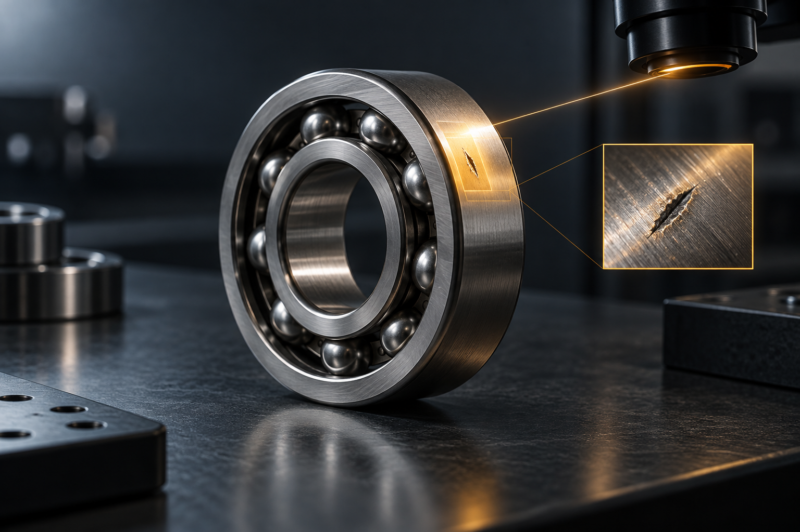

Programming languages
Python · JavaScript · TypeScript · C++ · C# · Java · PHP · HTML · CSS
Seeking an entry-level software development role
COMPUTER SCIENCE & ENGINEERING STUDENT
MD RAHIDUL ISLAM
I’m Rahidul, an aspiring full-stack developer at AIUB. I build responsive interfaces and secure APIs with Next.js, NestJS and TypeScript, and enjoy solving practical problems with a team.
01 / ABOUT ME
I’m a Computer Science and Engineering student and aspiring full-stack developer. My hands-on work includes responsive web applications, REST APIs, authentication and role-based access control using Next.js, NestJS, TypeScript and PostgreSQL.
Academic and team projects have taught me to collaborate closely, pay attention to detail and meet deadlines. I value clean, maintainable code and am seeking an entry-level software development role where I can contribute to production-quality products while learning from an experienced engineering team.
02 / SKILLS
Python · JavaScript · TypeScript · C++ · C# · Java · PHP · HTML · CSS
Node.js · NestJS · Next.js · React.js · TypeORM · Material-UI · DaisyUI · Tailwind CSS · .NET · GUNA UI · Swing · OpenGL
PostgreSQL · MySQL · Oracle SQL · Git · GitHub · Postman · VS Code · Visual Studio · Linux (Ubuntu/WSL)
Figma · Trello · Canva · Notion · Microsoft 365 · Blynk · Cisco Packet Tracer · Multisim · AutoCAD
Data Structures & Algorithms · Object-Oriented Programming · Database Management Systems · Computer Networking · Operating Systems · REST APIs · Authentication & Authorization
Bangla — Native
English — Professional working proficiency
Hindi — Conversational
03 / PROJECTS
6 projects
An EV charging platform connecting users, bookings, payments and technician workflows. Built with secure authentication and role-based access.
Full-stack EV charging platform
A metro ticketing system with account management, fare calculation, booking and ticket validation. AJAX keeps the experience responsive.
Web-based metro ticketing
Managing tour packages, customers, reservations and payments with modular, object-oriented design.
Object-oriented Java application

Computer Graphics · AIUB
An animated railway environment with trains, tracks and platforms, using geometric transformations and timer-based animation.
Computer Graphics coursework · AIUB
A desktop management system for orders, billing, inventory and customer records, backed by a relational database.
Desktop management application

Microprocessor and Embedded Systems · AIUB
An ESP32-based system transmitting live sensor readings to an IoT dashboard for remote health monitoring and device-status updates.
Embedded Systems coursework · AIUB
No matching projects. Try another keyword or select All.
04 / RESEARCH EXPERIENCE
Applied work in computer vision, machine learning and cybersecurity.

Compared Grad-CAM and patch-based heatmaps on MVTec AD for lightweight, explainable defect localization. Built an image-preprocessing and CNN evaluation pipeline to highlight defective regions.
Computer vision & explainable AI
Designed a multi-agent intrusion-detection concept on NSL-KDD using ensemble and neural-network models. Performed data preprocessing, threshold tuning and model evaluation for a robust detection pipeline.
Machine learning & cybersecurity
05 / EDUCATION
American International University-Bangladesh
Dhaka, BangladeshNotre Dame College, Mymensingh
Poncahashi High School
BEYOND THE CODE
As a Notre Dame Science Club member, I assisted with the National Science Festival, workshops and exhibitions. As a school parade team leader, I led our team to first place twice in inter-school competitions. I also earned first place in the school-level scholarship examination in 2017–2018.
Outside development: traveling, reading books, playing guitar and watching movies.
06 / CONTACT
Have a question about my work, a project idea or an opportunity? I’d be glad to hear from you.
Prefer email? You can write to me directly using the address above.